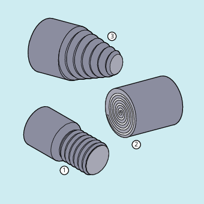

Threads with constant lead can be machined with G33:
Cylindrical thread ①
Face thread ②
Taper thread ③

| Note |
Technical requirement for thread cutting with |
Multiple thread
Multiple thread (thread with offset cuts) can be machined by specifying a starting point offset. The programming is performed in the G33 block at address SF.
| Note |
If no starting point offset is specified, the "starting angle for thread" defined in the setting data is used. |
Thread chain
A thread chain can be machined with several G33 blocks programmed in succession:
| Note |
With continuous-path mode |
Direction of rotation of the thread
The direction of rotation of the thread is determined by the direction of rotation of the spindle:
Clockwise with M3 produces a right-hand thread
Counter-clockwise with M4 produces a left-hand thread
Cylinder thread:
G33 Z… K…G33 Z… K… SF=…Face thread:
G33 X… I…G33 X… I… SF=…Tapered thread:
G33 X… Z… K…G33 X… Z… K… SF=…G33 X… Z… I…G33 X… Z… I… SF=…
| Command for thread cutting with constant lead | ||
| End point(s) in Cartesian coordinates | ||
| Thread lead in X direction | ||
| Thread lead in Y direction | ||
| Thread lead in Z direction | ||
| Longitudinal axis | ||
| Transverse axis | ||
| Thread length and lead for cylinder threads | ||
| Thread diameter and thread lead for face threads | ||
| Thread lead for tapered threads The specification ( | ||
< 45°: | The thread lead is specified with | ||
> 45°: | The thread lead is specified with | ||
= 45°: | The thread lead can be specified with | ||
| Starting point offset (only required for multiple threads) The starting point offset is specified as an absolute angle position. | ||
Range of values: | 0.0000 to 359.999 degrees | ||
| Program code | Comment |
|---|---|
| N10 G1 G54 X99 Z10 S500 F100 M3 | ; Work offset, approach starting point, activate spindle. |
| N20 G33 Z-100 K4 | ; Cylinder thread: End point in Z. |
| N30 G0 X102 | ; Retraction to starting position. |
| N40 G0 Z10 | |
| N50 G1 X99 | |
| N60 G33 Z-100 K4 SF=180 | ; 2nd cut: Starting point offset 180°. |
| N70 G0 X110 | ; Retract tool. |
| N80 G0 Z10 | |
| N90 M30 | ; End of program |
| Program code | Comment |
|---|---|
| N10 G1 X50 Z0 S500 F100 M3 | ; Approach starting point, activate spindle. |
| N20 G33 X110 Z-60 K4 | ; Tapered thread: End point in X and Z, specification of thread lead with K... in Z direction (since angle < 45°). |
| N30 G0 Z0 M30 | ; Retraction, end of program. |
See also:
Thread cutting with constant lead (G33, SF): Further information
Thread cutting with increasing or decreasing lead (G34, G35)
Programmed run-in and run-out path for G33, G34 and G35 (DITS, DITE)
Fast retraction during thread cutting (LFON, LFOF, DILF, ALF, LFTXT, LFWP, LFPOS, POLF, POLFMASK, POLFMLIN)
Convex thread (G335, G336)